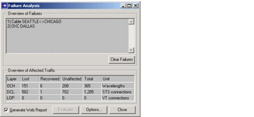

Failure Evaluation > Failure Analysis
Failure Analysis
You can use SP Guru Transport Planner's Failure Analysis mode to evaluate how specific network failures affect traffic. Failure analysis determines how traffic currently routed in the network reacts to failures you define. After a failure, some traffic might be lost or rerouted. The following steps outline the workflow for running a Failure Analysis operation:
Procedure 14-2 Running a Failure Analysis
- Choose Info > Failure Analysis.
The Failure Analysis dialog box appears, and you are now in Failure Analysis mode.
Figure 14-6 Failure Analysis Dialog Box

- Specify the objects that you want to fail, as described in Specifying Failures.
- Run the failure analysis by clicking Evaluate in the Failure Analysis dialog box.
- Analyze the effects of the specified failures, as described in Evaluating the Impact of Failures on Traffic.
- If you want to run additional Failure Analysis operations, repeat steps 1 through 4. Otherwise, close the Failure Analysis dialog box to exit Failure Analysis mode. (You cannot run any network design operations such as routing or dimensioning while in Failure Analysis mode.)
End of Procedure 14-2
| Home © 1987-2007 OPNET Technologies, Inc. All Rights Reserved. This software may be covered by one or more U.S. Patents. See complete patent notice in the Legal Notices section. OPNET Support Center |